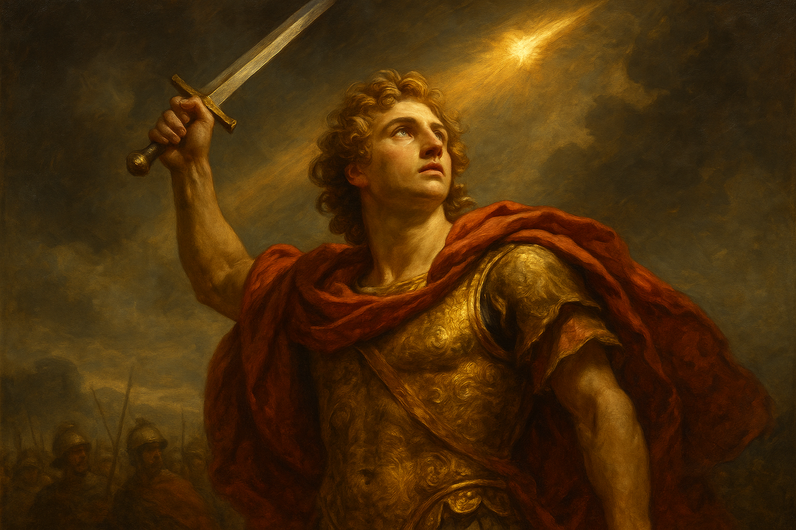
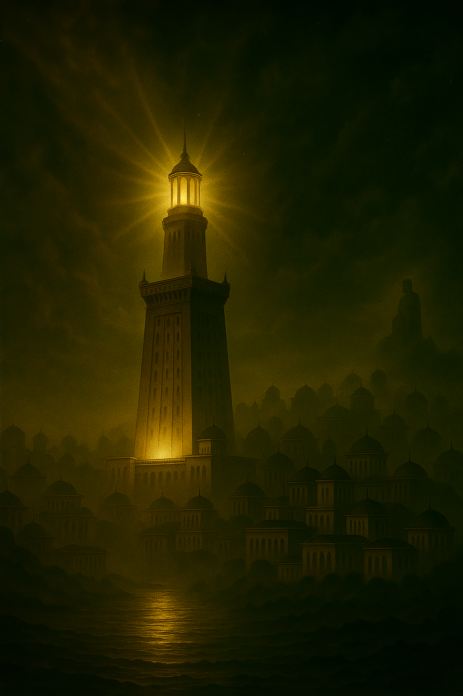
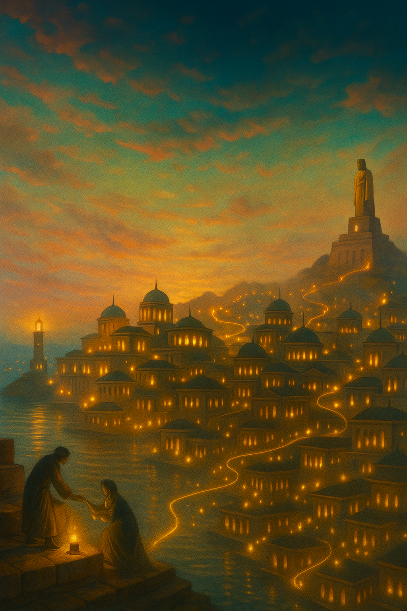
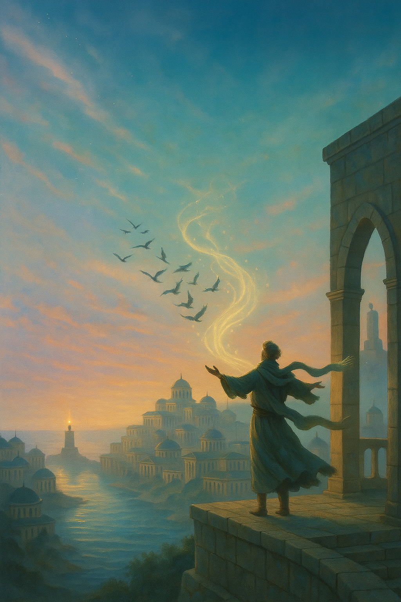
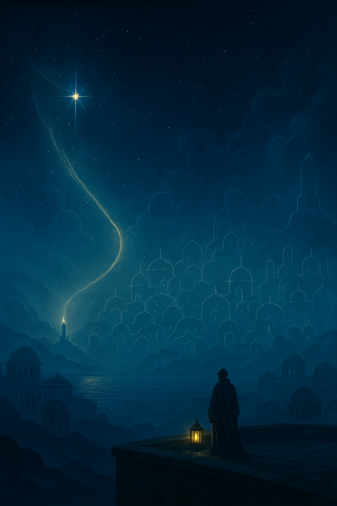
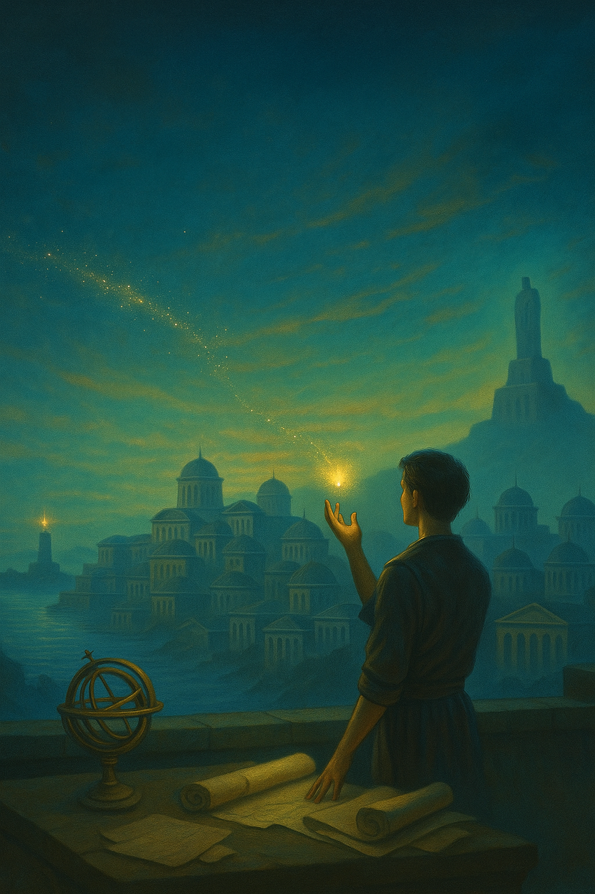
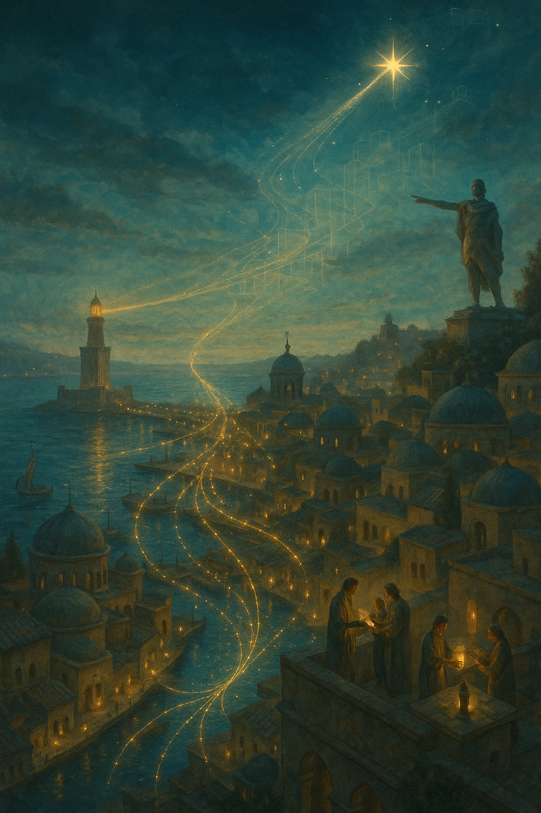
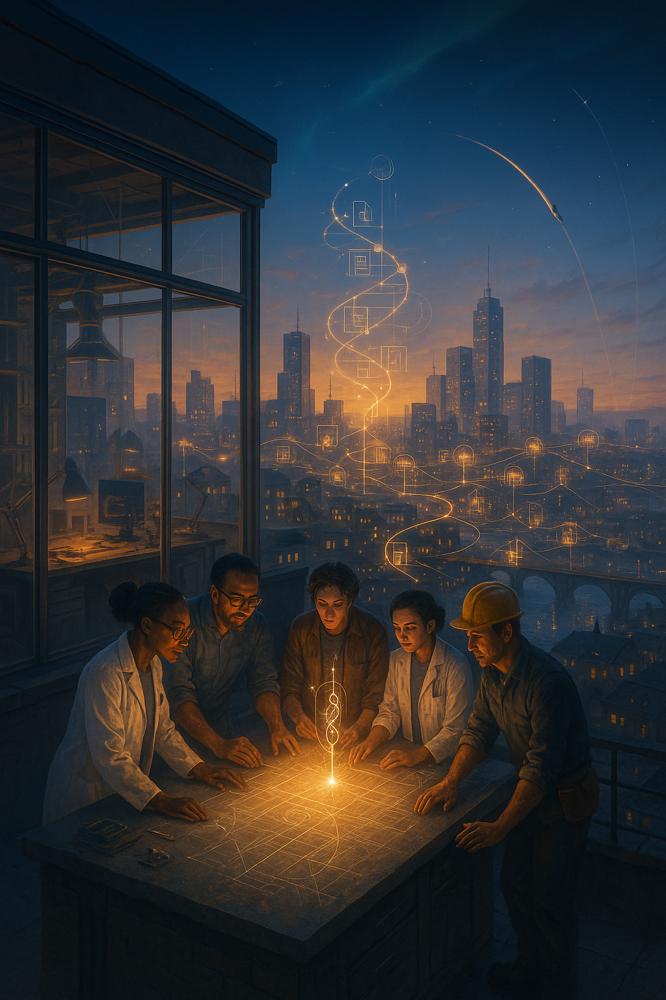
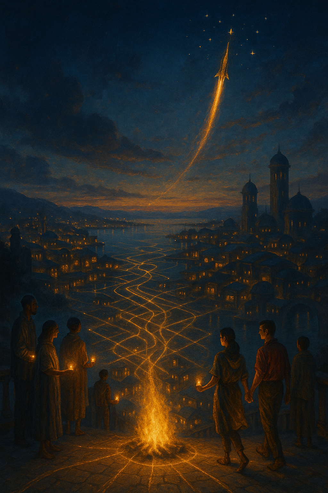
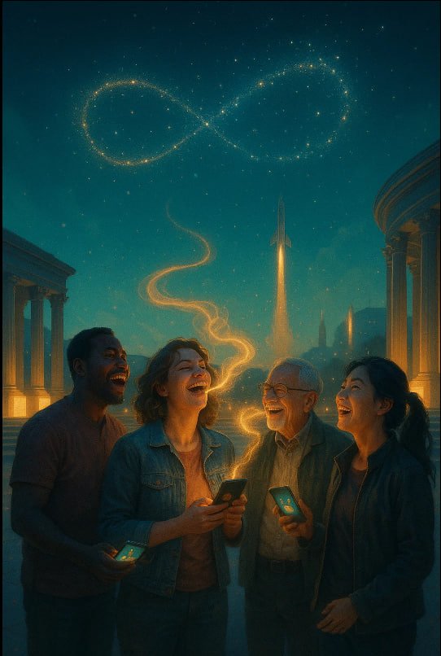

Mission of the Meme Order
RAKODI — The City That Doesn’t Exist on Maps.
Live by steering your own destiny and boldly reach for the stars.
Let your mind be the blade, and your heart the flame that directs it toward the light.
First Alexandria — the city that inspired Rakodi
The first Alexandria is a legendary city in Egypt, founded by Alexander the Great in 331 BC. He envisioned it as a new center of trade and culture, uniting Egypt with the classical world of the Mediterranean. After Alexander’s death, the city became the capital of the Ptolemaic dynasty and grew into the intellectual heart of antiquity. It was here that the famous Library of Alexandria was created — a repository of knowledge from across the world — and the great Lighthouse of Pharos was built, one of the Seven Wonders of the Ancient World. Alexandria quickly gained renown as a city of philosophers, poets, and scholars — a place where new ideas and meanings were born.
It is important to remember that before Alexandria, there stood the Egyptian settlement of Rakotis. From this name comes “Rakodi” — a symbol of continuity, memory, and inspiration. Ancient Rakotis became the foundation of a city that changed history, and today its metaphor lives on in our project.


Trend I · Beacon Protocol
The Lighthouse of Pharos
Switch on the torch, lift it high, and ignite your own beacon.
The Lighthouse of Pharos was not merely a tower of stone, but a voice of eternity speaking to humankind. Its light pierced through the darkness, whispering to sailors: “There is a path. Even if you are alone upon the boundless sea.” Born of human hands, yet touched by the divine, its radiance felt as though the universe itself was reaching out to those daring enough to sail beyond the horizon.
For the ancient world, Pharos was a wonder, a living testament that human will and intellect could lift fire to the heavens. For us, it remains a symbol of hope, courage, and choice. Light can always be kindled, even in the deepest darkness, and once lit, it becomes a beacon for others to follow.
Within each of us lies our own Pharos — an inner flame, capable not only of illuminating our own journey but also of inspiring those who walk beside us.
The Light We Guard
To love means opening your heart to the world and letting it resonate within you. To dream means seeing beyond the horizon and daring to create the impossible. Courage is born the moment you choose to move forward, even when the path is hidden in darkness. And believing in yourself is the light that never fades, as long as you guard it within. We are building a space where love becomes movement, dreams become foundation, and faith becomes the key to the future. The world is waiting for those who dare to be themselves and live life to its fullest. Are you with us?
Trend I · Beacon Ignited
Pharos is Lit!
We have lit our own Pharos. Long ago, on the island of Pharos, the greatest lighthouse of the ancient world shone — a wonder of light whose fire guided sailors through darkness and storms. Its radiance spoke to every traveler: “You are not alone. The path exists.” Today, we carry that tradition forward. RAKODI lights its own Pharos — not of stone and fire, but of ideas, courage, and faith in humanity. Faith in you. This is a light strong enough to pierce through doubt and open the road to the future.
We believe: just as the Lighthouse of Pharos once stood as a symbol of hope and greatness, so too will our Pharos become the symbol of a new path. May its brilliance guide those who seek their own light, and be the sign that together we can transform a night of madness and fear into a dawn of reason and hope.
The Powers That Guide Us Forward
Between the sparks of our trends we pause to name the forces that keep the flame alive. These values soften the armor, sharpen the focus, and hint at the future we are building.

Love
Love is what makes us truly human. It gives birth to kindness and inspiration, fills our steps with meaning, and turns even the smallest act into something great.

Freedom
Freedom is the breath of the soul. It is not confined by walls or borders, for it lives in our choices and in the courage to be ourselves.

Dream
A dream is the star we see in the darkness. It leads us toward realities not yet created and reminds us that “impossible” is only a word, never a verdict.

Curiosity
Curiosity is the spark from which every discovery begins. It compels us to look beyond the horizon, to ask questions, and to seek answers even when no path has yet been drawn.
Reflections Before the Spark
About the Dream
A dream is neither a whim nor an escape from reality. It is an inner compass, quietly yet stubbornly pointing toward the place you have not yet been.
As long as a person hears that call, they are alive — because they are moving. From a dream come questions, from questions — a path, and from the path — a new reality.
Since the dawn of history, humanity has grown wherever someone dared to imagine the impossible. A dream is a fire that refuses to burn alone: it grows stronger when other flames ignite nearby. That is how magnet-cities are born — spaces that attract those for whom the usual horizons are never enough.
Take Alexander the Great as an example. His vision was to unite the world he knew (not exactly the way we choose to do it — haha, hopefully without battles), and that vision became the engine of a vast movement. By founding the first Alexandria, he created not just a port by the sea but a meeting place: a haven for the most diligent and the most “reckless” dreamers from all over the world.
There, languages, crafts, and ideas intertwined; alliances and rivalries were born; people learned to think bigger and to go further. Alexandria was ordered into existence by one man, but it was lifted to greatness by the dreams of thousands who reached for their goals together.
And so it is today: a dream is like a campfire. For some, it is small, and it needs help to blaze brighter. For others, it is wild and radiant, warming everyone who comes close. I feel such a fire burning within me — and I believe you do too. So share it with the world. And take a little of mine.


Reflections of the Meme Order
The Future Already Breathes Among Us
The future is not an abstraction. It is born in laboratories, in workshops, and in the minds of those who dare to ask impossible questions. Humanity is already learning to reach beyond Earth, to heal diseases, to extend life — and perhaps, one day, to challenge death itself. One day…
For centuries, it was scientists and creators who carried us forward. Leonardo da Vinci — a bridge between art and engineering. Nikola Tesla — the man who gave the world alternating current and dreamed of wireless energy. Dmitri Mendeleev — the architect of the Periodic Table, who turned chaos into order. Curie, Pasteur, Einstein, Turing — each laid a brick in the great edifice of the world we now inhabit.
If not for them — where would we stand today?
Once, a single discovery could take centuries. Today, every discovery sparks dozens more, and the pace of progress grows almost geometrically: yesterday’s summit becomes tomorrow’s foundation. Science is a chain reaction of knowledge — one why igniting a thousand how.
Yet not all are meant to be scientists. Some create art, some work with people, some build bridges and cities. Every contribution shapes the life of humanity. And it does not mean you are obliged to carve a “great legacy.” Simply by living, you already belong to the story. Every breath, every smile, every choice is a thread woven into the fabric of the future we are creating together.
Quiet Reflections · Values of the Movement
RAKODI Is More Than a Token
RAKODI is not just a logo or a website; it is not only about a crypto token, nor merely about media buzz. The token is an important tool of our ecosystem, but the meaning is broader: a movement of living people who believe in their dreams. We bring together those who know how to dream and act, who seek meaning, support, and honest conversation.
Here, you can arrive with any flame—blazing or barely flickering—and you will never hear “not enough.” You may catch your breath and watch from the side, or step forward and stand with the first pioneers.
Our aim is both simple and lofty: to inspire and to bring joy.
We are only beginning to shape our space, so settle in, get comfortable—and get ready for takeoff. RAKODI is a culture of mutual care and growth. We respect different paths and different paces, yet we walk one road—and a thousand at once: the Road to the Dream.
We believe a single kind word can change the trajectory of a day, and one shared spark can set an entire constellation alight. Welcome. Lift your head, light your heart—and join those already on the way.


Call II · Meme Summons
You Are Immortal Now.
That’s what I want to say one day. Or at least: “From now on, the average lifespan is 1,000 years, and we’ll look forever young — like we’re 20–30.” Today, I can’t say that. Tomorrow hasn’t arrived yet. So let’s extend life another way — available right now — to increase our chances of living to the day when I can truly say those words.
Our Tool No. 1 is laughter. Research has long shown its power; don’t just take my word for it — ask Google, ChatGPT, or Grok (they’ll confirm… probably). So we start with what we already have.
I call on you: create memes — funny, daring, majestic. Videos, images, GIFs — anything that makes the world smile. Let the world laugh with RAKODI (and at RAKODI).
Этапы проекта
-
I Основание
бренд, сайт v1, мем‑библиотека 1.0, старт на памфан, первые тизеры.
-
II Рост
квесты/награды, партнёрства, социальная сетка, регулярный выпуск видео.
-
III Порог DEX
целевые метрики, техническая готовность, аудит, переход на DEX.
-
IV После DEX
NFT‑«свитки», расширение Братства, новые форматы и коллаборации.